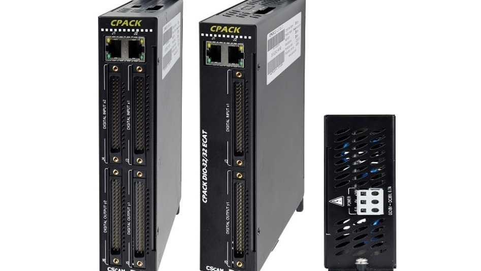
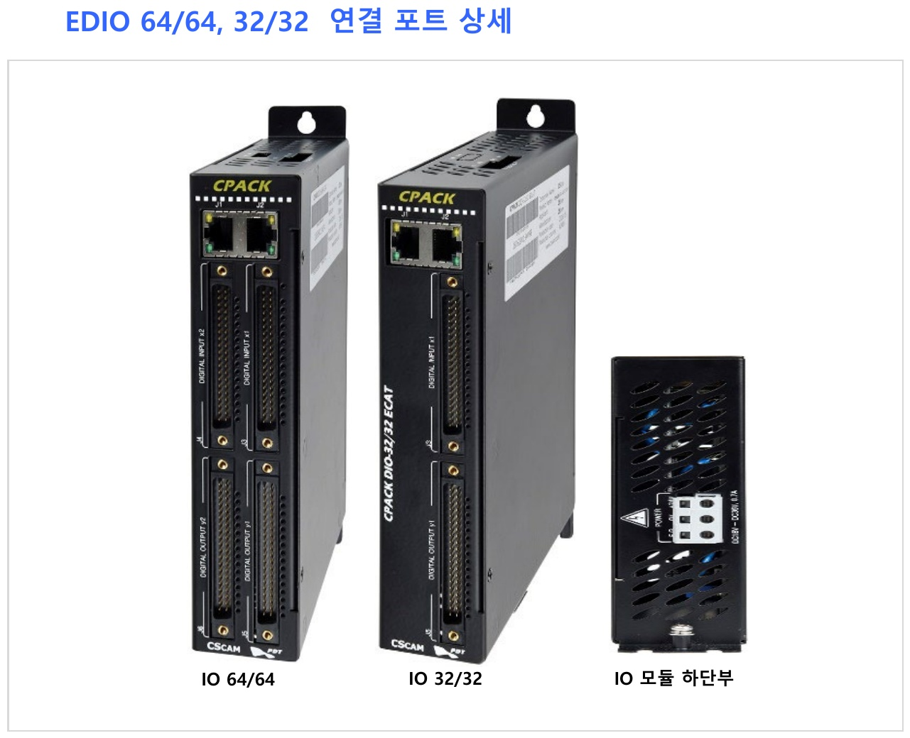

커넥터 케이블 타입, 32/32 단위로 확장.

| 이름 | CPACK DIO-64/64 / CPACK DIO-32/32 |
|---|---|
| 모듈 ID (32점) | 입력(32점), 출력(32점) |
| 모듈 ID (64점) | 입력(64점), 출력(64점) |
| 전원 | DC24V, 0.7A |
| 외형치수 | W : 40mm H : 212mm D : 144.4mm |
| 항목 | 구성 | 비고 |
|---|---|---|
| 입출력 (32/32) | 1열 2Port (INPUT x1 / OUTPUT y1) | — |
| 입출력 (64/64) | 2열 4Port (INPUT x1,x2 / OUTPUT y1,y2) | — |
| EtherCAT Port | IN Port | J1 |
| EtherCAT Port | OUT Port | J2 |
| 전원부 | DC24V, 0.7A | 하단부 |
구성 및 견적이 필요하시면 EtherCAT IO 모듈 라인업 전체를 함께 확인해보세요.